Coffee Shop Sales Performance and Strategic Insights Dashboard Report

Kayode E. Folorunsho

Overview
This report provides an in-depth analysis of the Deyoka Coffee Shop's sales data, visualized through a comprehensive dashboard built using Excel and Power BI tools. The dashboard serves as a central hub for monitoring key performance indicators (KPIs) related to sales, product demand, customer preferences, and location-based performance. By evaluating trends and identifying high-impact insights, this report aims to support data-driven decision-making to enhance operational efficiency and customer satisfaction at Deyoka Coffee Shop.
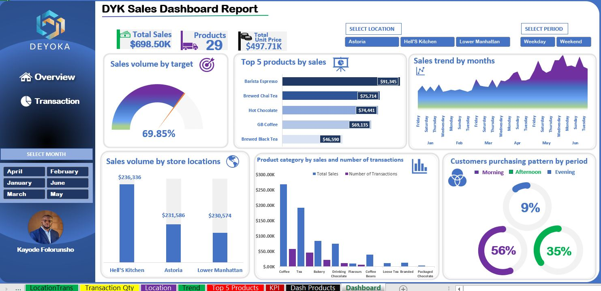About the Dataset
The dataset used for this analysis was sourced from Kaggle, containing records on sales transactions, product types, store locations, and customer purchase behaviors over a six-month period. The dataset includes attributes such as transaction date, product categories, store locations, sales volume, and transaction counts. This rich dataset provided the basis for an in-depth exploration of Deyoka Coffee Shop’s sales performance across multiple dimensions.
Data Quality Assessment
Data quality is essential to ensure accurate and reliable analysis. The dataset was assessed and cleaned through several steps in Power Query, which helped to address data integrity issues. Here is a summary of the data quality processes applied:
- Duplicates Removal: Any duplicate rows were removed to avoid skewed transaction counts or duplicated revenue data.
- Missing Values Handling: Missing or incomplete values in product names or categories were filled based on contextual data when possible. For sales data, any missing entries were replaced with estimates where appropriate.
- Data Type Standardization: Numeric fields, such as sales and quantity, were formatted consistently, and date fields were standardized to facilitate time-series analysis.
- Outliers Identification: High and low outliers in sales volume were reviewed to ensure they represented legitimate transactions and were not the result of data entry errors.
- Consistency Checks: Product and location names were standardized, addressing any variations in naming conventions across records.
Through these steps, the dataset was transformed into a reliable, high-quality foundation for meaningful analysis.
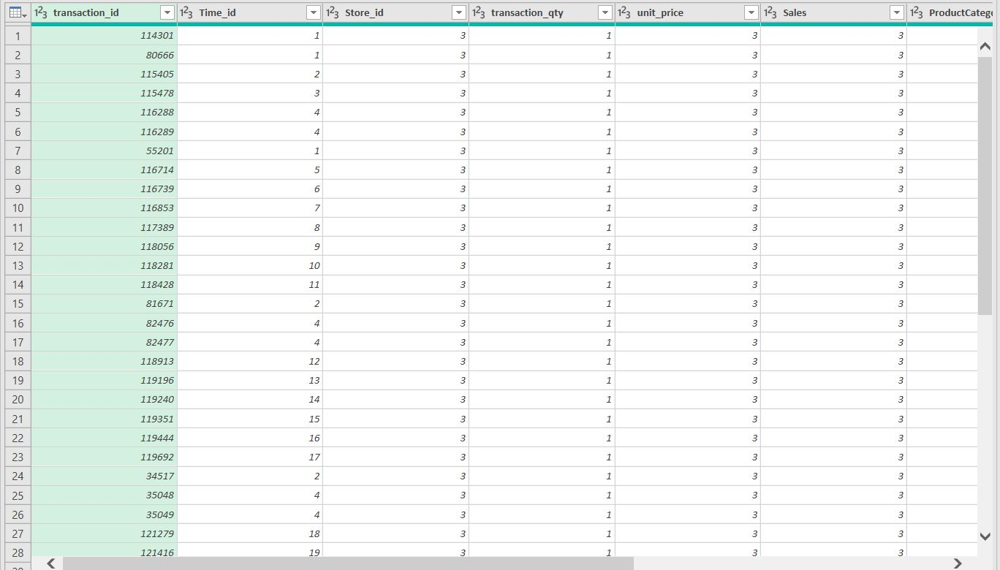Dashboard Overview
The Deyoka Coffee Shop sales dashboard was designed to present key insights visually, offering a user-friendly experience for stakeholders. Key components include:
- KPI Indicators: Display total sales, the number of products, and achievement toward sales targets, offering a quick summary of business performance.
- Sales and Product Analysis: Includes detailed views of product sales rankings, average transaction value, and product category breakdown.
- Location-Based Performance: Visualizes sales volume and transaction counts by location, helping to compare performance across Deyoka's different stores.
- Time-Based Sales Trends: Shows sales trends by day, week, and month, highlighting peak sales periods and patterns in customer behavior.
- Customer Purchase Patterns: Analyzes customer purchases by time of day, allowing a deeper understanding of high-traffic hours.
The dashboard allows for flexible filtering by month, location, and day type (weekday vs. weekend), providing granular insights that can support targeted decision-making.
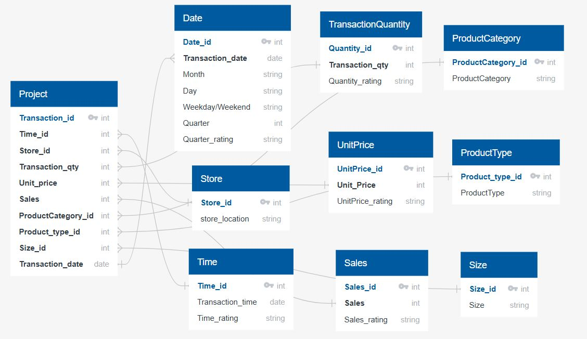6. Analysis and Visualization
The Deyoka Coffee Shop sales dashboard was designed to provide a holistic view of performance metrics across various aspects of the business, including products, locations, sales trends, and customer purchasing behaviors. Each visual element was created to make data interpretation straightforward, empowering stakeholders to make informed decisions.
- Sales Volume by Target: This gauge visualization illustrates the percentage of the sales target achieved over the analysis period, with a current target achievement rate of 69.85%. The visual highlights whether the shop is on track to meet its set sales goals. While substantial progress has been made, further efforts may be required to close the gap and reach 100% of the target. 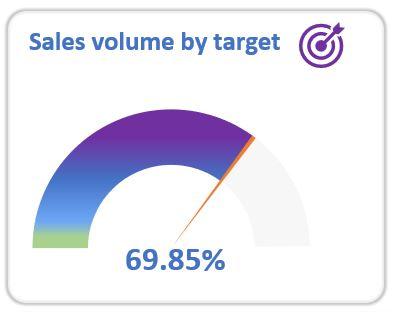
- Top Products by Sales: This bar chart ranks products by sales revenue, with Barista Espresso leading at $91,345, followed by Brewed Chai Tea ($75,714) and Hot Chocolate ($74,441). This ranking helps to quickly identify the best-performing products, allowing for strategic inventory planning and promotion focus. The data also reveals a marked preference for espresso-based and specialty beverages, suggesting potential growth in these categories. 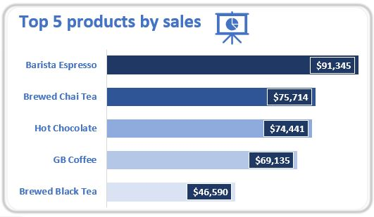
- Sales Volume by Store Locations: This visual compares total sales across the three store locations: Hell's Kitchen, Astoria, and Lower Manhattan. Hell's Kitchen generated the highest revenue, with $236,336, followed closely by Lower Manhattan at $230,574 and Astoria at $231,586. The balance in sales suggests consistent demand across locations, though targeted efforts at individual stores may further maximize sales.
- Sales Trend by Months: A line graph tracks the weekly sales trend over six months, from January to June. The visualization indicates fluctuations in demand, with noticeable peaks in certain weeks and dips in others. Weekend sales appear to be generally higher than weekday sales, possibly reflecting customer habits of weekend shopping or leisure-driven visits. This trend provides insights into resource planning, indicating when additional staff or inventory might be needed to meet higher demand. 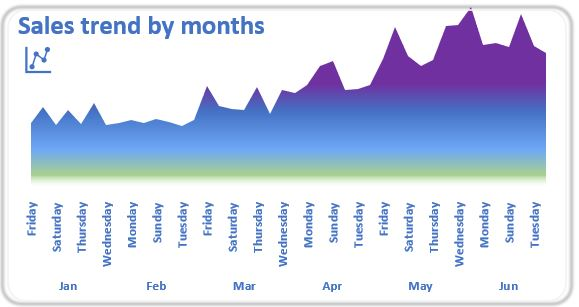
- Customer Purchasing Patterns by Period: This section offers a breakdown of customer purchasing behavior by time of day, split into morning (9%), afternoon (56%), and evening (35%). Afternoon hours show the highest sales volume, which suggests that customers may prefer Deyoka Coffee Shop as an afternoon spot for relaxation or meetings. Such insights can guide marketing promotions, encouraging morning visits through breakfast specials or loyalty discounts to balance out demand across the day. 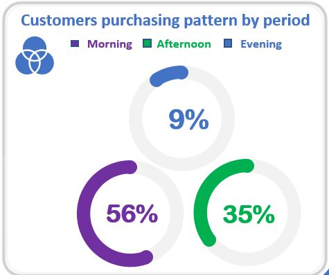
- Product Category by Sales and Number of Transactions: This clustered bar chart compares each product category by total sales and number of transactions, giving insight into both revenue generation and customer transaction frequency. Coffee and Tea categories contribute the most to total sales, while items like Drinking Chocolate and Loose Tea see moderate transaction volumes. Understanding the product category performance helps in adjusting the product mix and focusing on items with high margins or popularity.
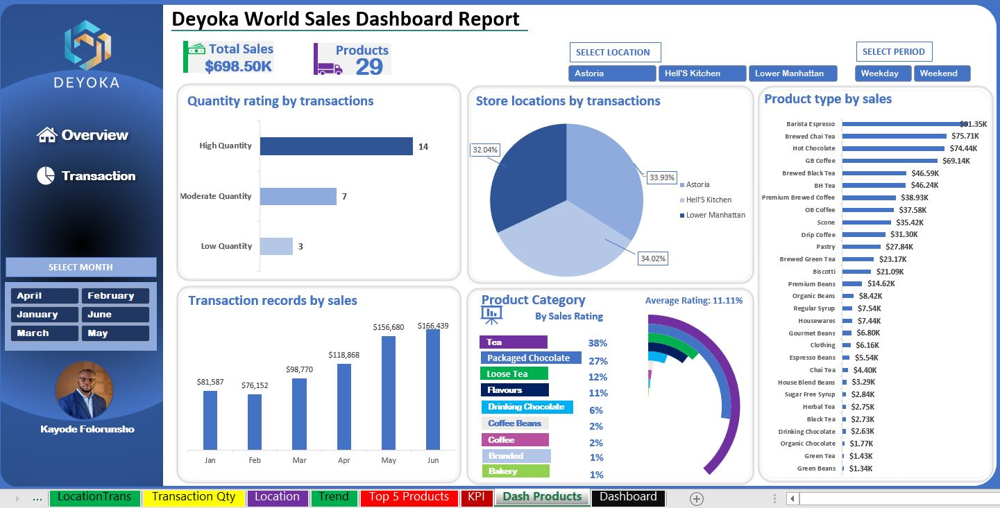
- Quantity Rating by Transactions reveals that most sales are in the high-quantity category, with 14 transactions, followed by moderate-quantity at 7 transactions, and low-quantity at 3 transactions. This distribution suggests a trend toward bulk purchasing or popular items driving higher transaction volumes. 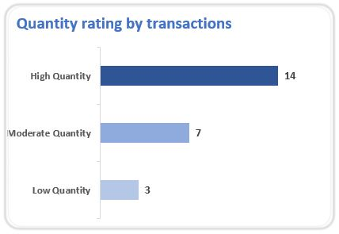
- Analyzing Store Locations by Transactions shows an even distribution across three locations. Lower Manhattan leads marginally with 34.02% of transactions, followed closely by Hell's Kitchen at 33.93%, and Astoria at 32.04%. This near-equal split indicates that all locations contribute significantly to overall sales, with Lower Manhattan slightly outperforming. 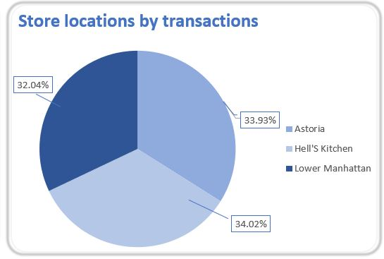
- Transaction Records by Sales across months show a clear upward trend. January started with $81,587 in sales, slightly declining in February to $76,152. Sales began climbing in March to $98,770, followed by significant increases in April at $118,868 and May at $156,680. June capped off the trend with the highest sales at $166,439. This monthly progression suggests growing demand or effective sales strategies driving consistent growth through the first half of the year. 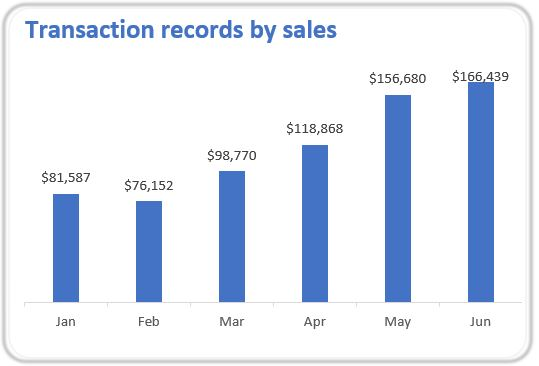
- The Product Category by Sales Rating identifies Tea as the dominant category, accounting for 38% of total sales, indicating strong consumer preference. Packaged Chocolate follows with 27%, while Loose Tea and Flavours contribute 12% and 11% respectively. Lower percentages are seen in Drinking Chocolate, Coffee Beans, and Branded Coffee, each at 6% or less. This distribution suggests prioritizing high-performing categories while assessing the potential of lower-contribution items. 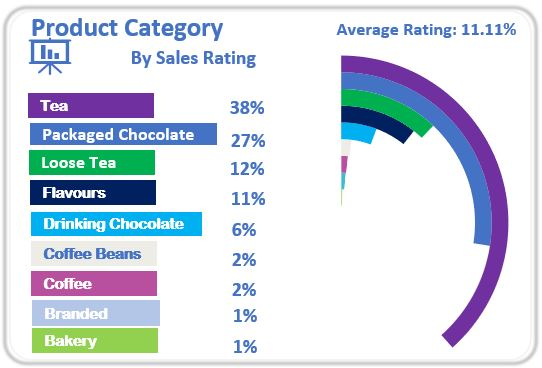
- In terms of Product Type by Sales, Barista Espresso tops the list with $91.35K in sales, followed by Brewed Chai Tea at $75.71K and Hot Chocolate at $74.44K. Mid-range sellers, like Brewed Black Tea, BH Tea, and Premium Brewed Coffee, each generate over $35K in sales. On the lower end, items such as Green Beans, Herbal Tea, and Organic Chocolate have sales below $5K, indicating lower demand or limited promotion.
- The Average Rating of 11.11% across all transactions suggests potential for improvement in customer satisfaction, especially if this rating is based on a broader scale. Overall, the dashboard provides a clear view of key performance metrics, showing growth trends, high-demand products, and consistent contributions across store locations, while identifying areas for potential improvement in customer engagement and product focus.
7. Insights and Recommendations
Based on the visual analysis of the data, several actionable insights and recommendations emerge:
- Insight: Barista Espresso, Brewed Chai Tea, and Hot Chocolate are the top sellers, making up a significant portion of total sales.
- Recommendation: Consider expanding the variety of these top-selling products to include seasonal or limited-time flavors. For instance, introducing a holiday-inspired espresso or chai tea might attract additional interest during peak periods. Promoting these items through customer loyalty programs or social media can also capitalize on their popularity.
- Insight: Sales are evenly distributed across Hell's Kitchen, Astoria, and Lower Manhattan, with each location contributing significantly to overall revenue.
- Recommendation: Conduct location-specific marketing campaigns to amplify sales further. For instance, partnering with nearby businesses or hosting events at specific locations could boost foot traffic. Additionally, studying demographic data for each area could unveil targeted promotion opportunities, such as exclusive discounts for local residents or office workers.
- Insight: Afternoon transactions dominate with 56% of sales, suggesting that customers prefer visiting during these hours.
- Recommendation: To boost morning sales, consider offering special morning deals, such as discounted breakfast bundles or coffee-and-pastry combinations. Evening sales could benefit from promotions aimed at customers seeking a relaxed, evening atmosphere, like happy hour discounts on specific beverages or desserts.
- Insight: The sales trend line suggests higher sales on weekends, with notable peaks during specific weeks.
- Recommendation: Utilize this trend to plan promotional events or limited-time offers aligned with peak sales periods. By actively promoting events on weekends, Deyoka Coffee Shop can maximize sales potential. Additionally, resource allocation—such as staffing and inventory—can be strategically adjusted to meet these peak demands efficiently.
- Insight: While Coffee and Tea are top categories, other items like Drinking Chocolate and Flavored Beverages show steady but lower transaction volumes.
- Recommendation: Introduce bundled offers that combine popular items (e.g., espresso) with lower-transaction items (e.g., flavored beverages). This approach may increase awareness and encourage customers to try a broader range of products, helping to diversify sales.
High-Performing Products:
Balanced Location Sales:
Customer Time-of-Day Preferences:
Sales Trends Over Time:
Product Category Opportunities:
Conclusion
The Deyoka Coffee Shop sales dashboard offers a detailed snapshot of current business performance, revealing key patterns in product demand, location-based sales, and customer purchasing behaviors. This analysis identifies several areas where targeted actions can drive growth:
- Enhance Product Offerings: Expanding on top-performing products like Barista Espresso and Brewed Chai Tea can satisfy customer preferences and attract new segments. Additionally, limited-time or seasonal products may stimulate interest and increase repeat visits.
- Optimize Location Strategies: By tailoring promotions to each location's demographic, Deyoka can deepen its local presence and build customer loyalty. Special events or collaborations can further strengthen community ties and encourage local patronage.
- Leverage Time-Based Promotions: Customer preferences for afternoon purchases suggest an opportunity to balance demand throughout the day. Morning and evening promotions, designed to attract different customer groups, could enhance sales consistency.
- Prepare for Seasonal Peaks: Monitoring trends allows Deyoka to anticipate peak sales periods and adjust staffing, inventory, and marketing accordingly, ensuring a seamless customer experience during high-traffic times.
Overall, these insights highlight opportunities for strategic decision-making that align with customer preferences, market trends, and operational efficiency. By implementing these recommendations, Deyoka Coffee Shop can continue to thrive, enhancing customer satisfaction and driving sustained revenue growth.